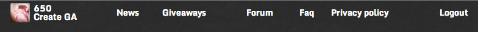
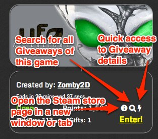
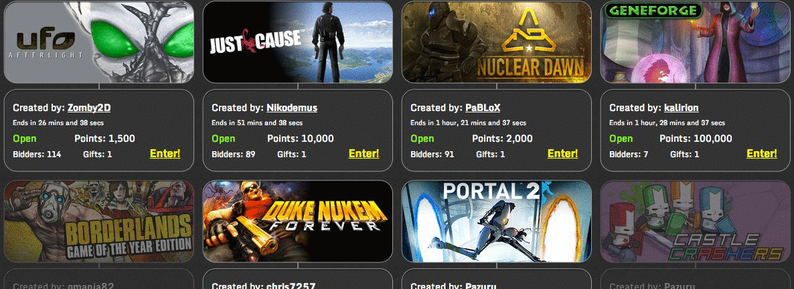
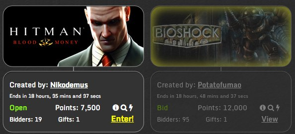
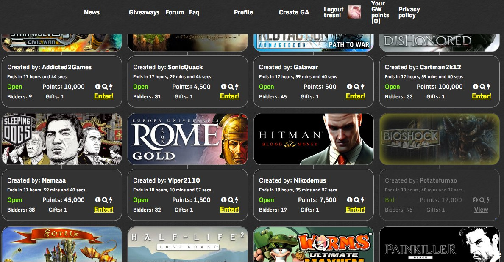
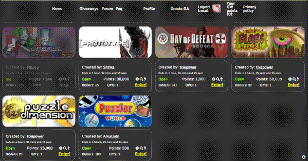

IndieGala Giveaways Enhancement Suite
View the Project on GitHub tresni/IGES
Downloads
 Gone is some of the noise, present is some new ease of use! Details in the Changelog
 Quick access to the functionality you want. Click to get a mini-screen of the giveaway and enter/leave directly from that screen. The will give you a mini window listing all the giveaways for that game, so you can see if you are spending your points wisely. Lastly the will open the Steam store in a new tab so you can check the game out in a little more detail.
 No more being bombarded with games you already own, they are discreetly hidden from view to make your experience better.
 A little bit of highlighting for those games you really want.
 The header now follows you around so you can quickly move between different parts of the website, especially important when using infinite scroll.
 No more navigating through page after page of Giveaways, simply keep scrolling and new pages of Giveaways will automatically appear on screen.
Suggestions welcome.